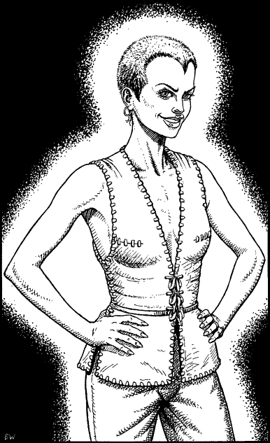

327
Before you stretches a gigantic cavern. Its walls of ancient obsidian rise to a high-arched roof where hangs a circle of stalactites—twelve huge luminescent spears of lime-green stone. Bathed in their pulsating glow is a many-tiered crystal dais, identical to the one on which Arch Druid Cadak stood before the great shimmering archway at the edge of the Maakengorge. To the right of this dais you see a dark tunnel. The entrance appears like a black semicircular shadow upon the cavern wall.
Standing upon the uppermost tier of the dais is a creature which both mesmerizes and repulses you. It has the semblance of a human female, yet she stands more than twenty feet tall. She is strikingly beautiful but you sense at once that she is also wholly evil. Her skin has a deathly, corpse-like pallor and she is clad in a flowing black costume which trails thin wisps of smoke. Cloaked figures scurry around the lower tiers of the dais, carrying out their mistress’s commands and attending to her every whim. If they fail or displease her she crushes them like lowly insects in her elegant, deadly hands.
You watch in silent fascination as this demonic creature makes preparations, as if for a long journey. Then, in a flash of a sudden realization, you know her purpose. She is getting ready to enter the tunnel, a tunnel which will transport her to the archway at the edge of the Maakengorge. She is the deliverer of Vashna of whom Cadak spoke, the one who will raise the spirit of Lord Vashna from the Chasm of Doom!

Suddenly you are aware that someone is standing behind you. Instantly, you unsheathe your weapon and spin around to face them, half-expecting to see the grotesque face of a demonic minion. Instead, you find yourself looking into the impish face of a young, teenage girl.